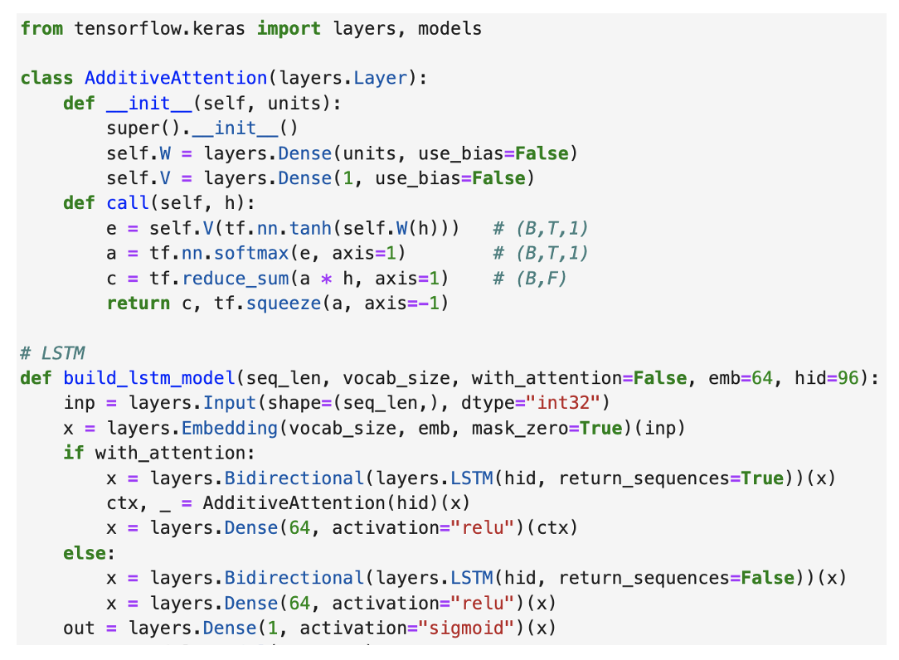
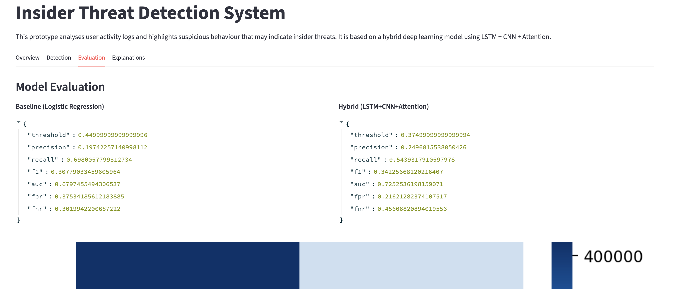
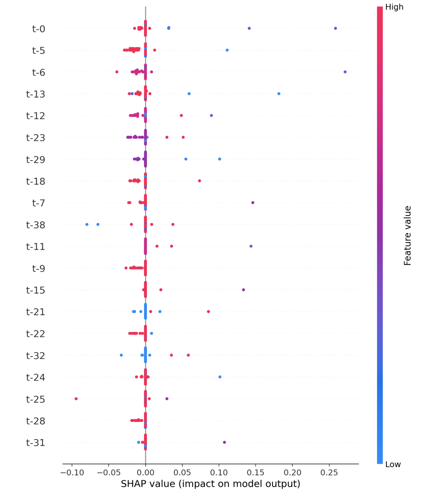

Computer Science MSc student interested in data analysis, machine learning, and security-focused roles.
I am a Computer Science MSc student with hands-on experience in Python, SQL, Tableau, and Jupyter Notebook. My background in compliance, operations, and administration has strengthened my attention to detail, documentation, problem-solving, and ability to work carefully with confidential information.
I am especially interested in data analysis, machine learning, behavioural analytics, and security-focused work.
This project focused on detecting potential insider threats from behavioural log data using Python and sequence-based machine learning.
I developed an MSc dissertation project using the CERT r4.2 insider threat dataset to analyze user behaviour and identify suspicious activity patterns. The goal was to improve insider threat detection while keeping results interpretable and more useful for analyst review.
The hybrid model improved ROC-AUC from about 0.68 to 0.73 and reduced false positives by roughly 42 percent compared with the baseline, helping produce a cleaner and more useful alert set.
This image shows part of the implementation used to build the model, including the attention mechanism and sequence-based design.

I built a Streamlit dashboard to review thresholds, compare model performance, and inspect evaluation outputs in a more practical and readable way.

SHAP was used to highlight which time steps had the strongest influence on model output, helping connect predictions back to behavioural patterns.
